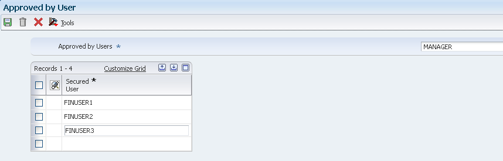
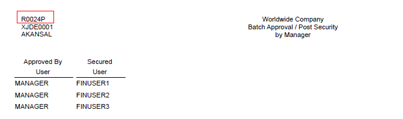

Batch Approval and Post Security (P00241) restricts the approval and posting of batches to certain users. You may also want to restrict unauthorized users from viewing batches other than their own in the General Journal Review program (P0011). The Batch Approval/Post Security Constants establishes User Group Authority to be implemented for the Accounts Receivable, Accounts Payable and General Ledger modules. Each system can be set independently of the other systems. Additionally, batch approval and post security is not strictly limited to financial batches. The system security also applies to batches that feed into the financial systems, such as inventory and manufacturing.
This functionality utilizes two lists of users that are defined by management to help secure the posting process:
Secured Users: users included on this list are restricted from approving and posting batches.
Approved by Users: users on this list can approve and post batches on behalf of secured users.
NOTE: If a Secured User makes changes to an Approved batch, the batch is returned to a Pending Status (F0011.IST - Blank) and must be reapproved.
Scope
This document is intended for both Technical and Finance Functional users who will be involved in setting up of security for reviewing and posting batches in General Accounting system.
Details
Setting up Manager Approval of Batches
You can choose whether to have management approve each batch of transactions before the batch can be posted. Open P0000 application (fast path 9K) to access the General Accounting Constants form as shown below.
* Manager Approval of Input
Select this check box if manager approval is required for batches. The system assigns a Pending status to the batch and a manager must approve it before it can be posted.
If you do not select this check box, the system assigns an Approved status to the batch and the batch does not require that a manager approve it before it can be posted.
Similarly you could set up Manager Approval of Batches for Accounts Receivable and Accounts Payable modules using the respective Constants form.
NOTE: You set up management approval for AR, AP, and GL modules and not for specific companies. For more information on setting up General Accounting Constants, refer to Overview of General Accounting Constants (P0000).
Setting Up Batch Security
Open the Batch Approval / Post Security Constants application (P00241).
*1 G/L Batch Security, A/P Batch Security, and A/R Batch Security Select the corresponding check box to activate batch security editing in the EnterpriseOne General Accounting, EnterpriseOne Accounts Payable, or EnterpriseOne Accounts Receivable system. The system performs this editing when you approve and post batches for a particular system. After you activate batch security editing, you must set up authority for secured users and approved users.
*2 Batch Review Security Select this check box to restrict unauthorized users from viewing batches other than their own using the General Journal Review program (P0011).
NOTE:
Any changes made to the Batch Security setup will be reflected only after resetting the cache.
Setting up Approved by/Secured users is a mandatory step to achieve the Batch Approval and Post Security functionality.
After you decide the systems to secure, you must set up the relationship between the secured users and the approvers based on the types of batches that you approve and post. You can choose to set up each secured user and add the authorized users or set up the authorized user and add the secured users.
Add Approved by users
Open the Batch Approval/Post Security Constants (P00241).
Select the Approved by Users option from the Form Exit menu.
On the Work With Approved by Users form, click Add.
Enter the User Id of a person who is authorized to approve and post batches for a group of secured users.
Enter the User Id(s) of the Secured Users that this user can approve batches for. Secured users are restricted from approving and posting batches.

In this example, MANAGER is authorized to approve and post batches for all the secured users - FINUSER1, FINUSER2 and FINUSER3.
NOTE:
After setting up MANAGER as an Approved By user MANAGER will not be able to approve and post their own batches. It will be required to include MANAGER in the Secured Users list under the Approved By record to have the authority to approve and post their own batches.
If the person has authority to approve and post all user batches, enter *ALL in the Secured User field instead of identifying each user individually.
Add Secured Users
Conversely, if you inquire in Secured Users application, it will show the records for each Secured user tying back to the Approved By user added above.
In case you may have to add a Secured User, consider the following steps:
Select the Secured Users option from the Form Exit menu.
On the Work With Secured Users form, click Add.
Enter the Secured User of a user who is restricted from approving and posting batches.
Enter the User ID(s) of the person who is authorized to approve and post batches for the secured user in the Approved by User field.
NOTE: Using *PUBLIC as a user ID is not allowed in this program, nor are roles.
Printing Approved By/Secured Users
You can print a listing of the secured users or approved-by users by choosing Batch Security report (R0024P) from the Form Exits menu of any of the following forms and then running either of the batch versions (either by Approved User or by Secured User):
Batch Approval / Post Security Constants form
Approved by Users form
Secured Users form

Setting Up Workflow for Batch Approval and Post
Workflow Functionality
You can implement Batch Approval workflow to approve outstanding batches using the Employee Work Center (P012503). From the Work Center, an approver receives notification messages, can review and approve the batches, and if necessary, post the batches.
To approve batches or approve and post batches from the work center, you must first identify the approving manager in the appropriate workflow process. After each transaction batch is entered, the approver receives a workflow notification that the batch is ready for approval. Depending on the workflow process that you select, batches are either approved or approved and automatically submitted to post directly from the work center. Additionally, the employee who entered the batch receives notification that the batch was approved.
Following workflow processes are available for approving batches:
JDEBCHAPPR: Approve journal entry batches (batch type G).
JDEVBCHAPR: Approve voucher batches (batch type V).
Each workflow process has two versions:
Version 1: Approve batches only.
Version 2: Approve and post batches.
Note: The Batch Approval and Post Security (P00241) and Workflow JDEBCHAPPR or JDEVBCHAPR Version 2 (Batch Approval Process - G/L Auto Post) cannot be used together. The Workflow will launch R09801 with the original user's ID but since Batch Approval and Post Security (P00241) allows only the approver to approve the batch and post the batch both setup is not available.
Setup
Make sure that the manager and employee are set up in the address book.
Open Work with User/Role Profiles (P0092). Verify that each User Id has the correct address book number (AB#) associated with it.
Example: MANAGER user id with AB#5639006 and FINUSER1 user id with AB#5639005.
Check the flag for Management Approval of Input in General Accounting Constants (P0000).
Check the G/L Batch Security flag in Batch Approval/Post Securities Constants (P00241).
Set up Secured and Approved user in Batch Approval/Post Securities Constants (P00241).
Open Process Master (P98800) application and inquire for JDEBCHAPPR value in the Process field. You will notice two separate versions of the JDEBCHAPPR workflow process:
The first version is used if you want the manager to approve batches only.
The second version is used if you want the manager to approve and post batches.
Select the version of JDEBCHAPPR you will like to activate. Under the Design Tools tab, select Start Workflow Modeler option to open the workflow in design mode. Please ensure that the version of workflow is not active when workflow is opened in design mode.
In the Workflow Modeler, select the "REVIEW" node and right click to select Recipient Rules.
In the Workflow Recipient Rule Revisions, delete the default address number of 6002 and specify the manager's address book number. Click ok to save the Recipient Rules.
Click save to save the changes made to the Workflow Modeler.
Activate the version being modified by selecting Change Workflow Status under the Design Tools tab.
Under the Workflow Operations, select Process Task Monitor. Inquire by JDEBCHAPPR in the Process field. If anything is in the folder for JDEBCHAPPR, highlight it and click Terminate on the row exit bar.
NOTE:
Per the current design, JDEBCHAPPR workflow in General Accounting has a limited functionality. The current workflow logic neither ties back to P00241 Batch Approval/Post Security setup nor refers to the Approved User setup to determine the manager's user id. The "REVIEW" uses Send Message to the specified Address Number entered in Workflow Modeler. The "APPROVED" uses Send Message to sends the message back to the batch originator that this batch number is approved. Since JDEBCHAPPR works only with one hard coded address number, it is not very helpful unless all your Approved By Users have the same Address Number.
The Financial group in Oracle Software Support (OSS) does not support customization of a workflow process. The Tools group in OSS will only help with a general understanding of the Workflow Modeler, but cannot help with the customization of the standard workflow process. For assistance with customizing a workflow process, contact Oracle Field Services. This would be a billable activity.